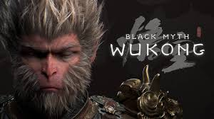

Black Myth: Wukong
Black Myth: Wukong es un RPG de acción inspirado en la mitología china. Encarnarás al Predestinado, que ha de embarcarse en un viaje repleto de peligros y maravillas para descubrir la verdad oculta acerca de una gloriosa leyenda del pasado.
Pagina Steam